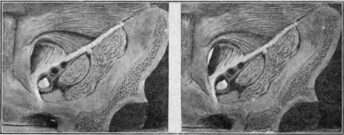

The Inguinal Region
Description
This section is from the book "Surgical Anatomy", by John A. C. MacEwen. Also available from Amazon: Surgical Anatomy.
The Inguinal Region
The Inguinal Region is of much importance surgically on account of the frequency with which hernia occurs in it. The arrangement of the abdominal muscles has already been given, and attention will now be directed to the parts particularly concerned in hernia. The chief of these is the inguinal canal-a slit, triangular in section, between the conjoined tendon behind and the external oblique in front, with Poupart's ligament as a base-which commences in the abdomen at the internal ring, and ends externally over the crest of the pubes at the external ring. It transmits the cord in the male, and the round ligament in the female, and, normally, the whole space of the canal is occupied by these structures. The parts are best studied from the abdominal side, and for this purpose we shall suppose in the first place that peritoneum, subperitoneal fat, transversalis fascia, and other structures have been removed, leaving the bones, ligaments, and muscles exposed, and that the abdominal wall is viewed from behind.
Poupart's ligament is a strong fibrous band, which runs from the anterior superior spine to the spine of the pubes. Gimbernat's ligament is a reflection from its inner, or pubic end, on to the ilio-pectineal line, which fills in the angle between Poupart and the bone, and which presents a crescentic free border. It should be borne in mind that the ilio-pectineal line runs not merely outwards, but also backwards-out, that is to say, from the plane of a diagram toward the observer- as otherwise this point is apt to lead to confusion. The transversalis muscle arises from the outer one-third of Poupart, while the internal oblique arises from the outer half of Poupart, and thus part of both of these muscles is seen. They rise from Poupart, arch over, and then, fusing to form the conjoined tendon, pass almost directly downwards, to be inserted into (a) the crest of the pubes, in front of the rectus (which, therefore, hides this portion from view), but behind the external oblique ; (b) spine of the pubes ; and (c) the first ½ inch of the ilio-pectineal line along with but behind Gimbernat's ligament. Thus, this latter portion of the conjoined tendon does not lie in the plane of a diagram, but projects outwards and backwards from it (see stereogram). The fibres of the transversalis and internal oblique, as just stated, arch above Poupart between their origin from it and their insertion as conjoined tendon, and through this arch the fibres of the external oblique can be seen, as this muscle arises from the whole extent of Poupart's ligament. But for the external oblique, there would be an aperture through the wall at this point. If the finger be passed through this arch downwards and inwards toward the middle line, between the conjoined tendon and the external oblique, it will lie in the position of the inguinal canal. If we pass the finger still further in, we find that it will enrerge on the anterior abdominal wall through the external ring-an aperture in the external oblique situated over the crest of the pubes, which is hidden from view by the conjoined tendon and the rectus, and which therefore will be described later. To complete the inguinal canal, the transversalis fascia must be in position. When in position, we find an aperture in it, situated over part of the arch already described, ½ inch above Poupart, and midway between the anterior superior spine and the symphysis. This is the internal abdominal ring, and through it the cord passes to enter the inguinal canal. As it does so, it receives from the transversalis fascia a covering, which assists in supporting and suspending the cord in the canal. To this covering the name of infundibuliform fascia is given. It is simply a tubular projection of the transversalis fascia, whose mouth is the internal ring. Running upwards along the inner border of the internal ring is the deep epigastric artery, which has arisen from the external iliac (which lies directly beneath the ring), and is running upwards and inwards to pierce the transversalis fascia, and so enter the sheath of the rectus. This artery forms the outer boundary of a triangle, formed internally by the outer border of the rectus, and below by Poupart's ligament. It is known as Hesselbach's triangle. When a hernia, instead of taking the ordinary course of entering the inguinal canal by the internal ring as the cord does, enters it through some portion of this triangle, it is called a direct hernia, in distinction to the ordinary form which is called oblique. The neck of a direct hernia lies to the inside of the deep epigastric artery, whereas that of an oblique lies to its outside. Hesselbach's triangle is divided into two portions, an outer and an inner, by the obliterated hypogastric artery, which runs upwards from the side of the bladder to the umbilicus. A direct hernia may pass through either of these divisions. When it passes through the portion external to the obliterated hypogastric, it is called an external direct inguinal hernia, and pushes before it a covering of the true transversalis fascia, instead of infundibuliform fascia, as in the case of an oblique hernia. When it passes through the portion internal to the obliterated hypogastric, it is known as an internal direct inguinal hernia, and pushes before it not merely a process of transversalis fascia, but also either perforates or pushes before it a layer of conjoined tendon. When the peritoneum is in position, the inguinal region presents three jossce when viewed from behind : external, external to the deep epigastric ; middle, between deep epigastric and obliterated hypogastric ; and internal (supravesical), between obliterated hypogastric and urachus. We may next trace the course of an oblique inguinal hernia from the abdomen to the scrotum, see what coverings it receives, and then look at the parts concerned in hernia fiom the outside. An oblique hernia then first pushes before it a layer of parietal peritoneum (and extraperitoneal fat), which forms the proper sac of the hernia, and then, passing through the internal ring alongside the cord, receives a covering of infundibuliform fascia, which we have already seen is a finger-like projection of transversalis fascia along the cord. The hernia is now in the inguinal canal, with the external oblique to the outside, the transversalis fascia, and, later, the conjoined tendon to its inner side, while Poupart's ligament is below. As the hernia passes down the canal, it receives a covering from the cremasteric fascia (partly cremaster muscle, partly fascia), and then, arrived over the crest of the pubes, it emerges from the canal by the external ring in the external oblique muscle, receiving as it does so a layer of intercolumnar fascia. Its other coverings are the superficial fascia and skin. If now'the abdominal wall be examined from the front, it is seen that the external oblique is fused with the whole length of Poupart's ligament, but that there is an aperture in its insertion into the crest of the pubes- this is the external ring. The external ring is bounded by two pillars, formed of external oblique aponeurosis-an external, which is inserted into the spine of the pubes ; and an internal, which is inserted into the symphysis (some fibres crossing to the pubic crest of the opposite side form the triangular fascia). These two pillars are bound together above by the inter columnar fascia, which consists of a series of arching fibres which cross from one pillar to the other. Thus the neck of an inguinal hernia lies inside the spine of the pubes and above the crest of the pubes and Poupart's ligament, whereas the neck of a femoral hernia lies outside the pubic spine and below Poupart's ligament. An inguinal hernia is called incomplete, or a bubonocele, when it does not enter the scrotum, and is spoken of as complete, or scrotal, when it does. In the female it enters the labium when complete, and is called labial.
Fig. 21.-Stereogram of Abdominal Wall, giving an Exaggerated View of the Inguinal, Femoral, and Obturator Canals. (For references, see Fig. 22.)
The figure may be viewed through an ordinary stereoscope or may be seen stereoscopically by holding it about 2 f et from the eyes (for normal vision), relaxing the accommodation (the pupils meanwhile dilating), and then slightly converging the eyes. Three figures will be seen, of which the central one is stereoscopic. A piece of card of the necessary length extending up vertically from the interspace between the two figures to the nose of the viewer facilitates the operation. The figures must be equally lit while viewing.
Continue to: